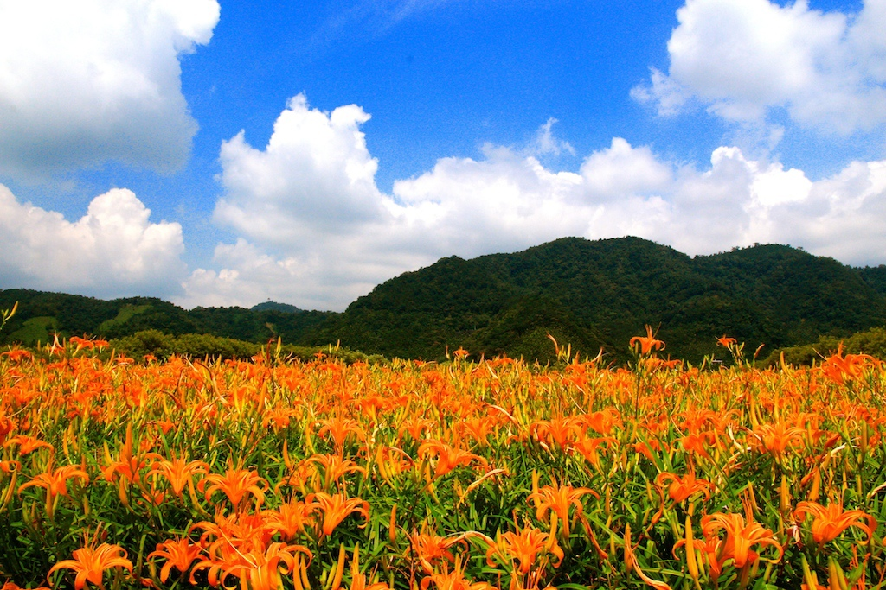

日月潭
Sun Moon Lake
地址：南投縣魚池鄉中山路163號
回顧921地震後，地方亟需觀光重建，九族文化村早期種的一千多棵重瓣山櫻花成為重要的觀光資產，於是從2001年開始的日月潭九族櫻花祭，激起了臺灣人驚艷櫻花成林的花海景觀，賞櫻人潮蜂擁而至，而櫻花祭規模也逐年擴大，觀光重建腳步邁開，不僅帶動災區經濟復甦，也感染了臺灣其他地區搶種櫻花的熱潮。
九族文化村內數量又多又集中的櫻花，令國人驚豔，之後每年盛大舉辦，戮力深耕臺灣賞櫻文化，2013年更取得日本國家櫻花協會唯一授證為日本海外「櫻花名所優選之地」的殊榮。這也是日本櫻花協會首次為海外認證櫻花名所，此舉也讓九族文化村的櫻花勝景與日本百大賞櫻名所齊名。九族唯一有夜間開放賞櫻，打造了台灣第一夜櫻的響亮風評，夜間的櫻花林每一棵櫻花都有自己美麗的燈光，部分區域並配合音樂，營造美麗動人的「臺灣第一夜櫻」秘境勝景，至今無人能夠超越！
更多介紹：